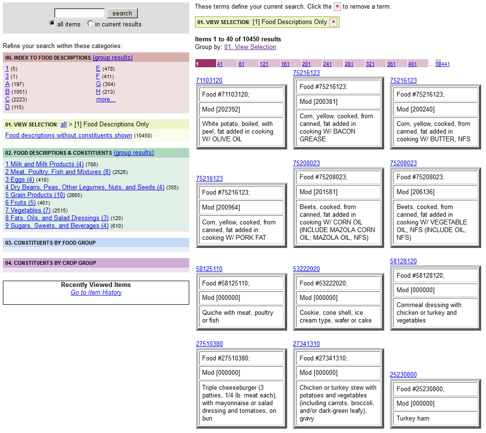

Meals by Meal Group
¶
Intro text here.
USDA FNDDS Meal Groups - Alphabetical
¶

Sphinx Documentation
Navigation
Prologue
Words and Formats used in Proposal
Features - Core
Features - Core with Detail
Chemicals
Commodities
Foods
Meals
Nutrition Analysis Methods
Nutrition Mathematics
Data Repository
Technology
Features - FDA Labeling Specifications
Features - Future
Glossary
Terms related to Project
Terms imported from Ontologies
Bibliographies
Ontomatica
Epilogue
Related Topics
Documentation overview
Features - Core with Detail
Meals
Previous:
Meals by Food Patterns
Next:
Meals by Formulation
Quick search